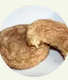

Sugar Cookies Cutouts

Descriptions
Miam miam! It's delicious. Today, I
we show you how to do crispy cookies.
Ingredients
- 1 cup butter, softened
- 1 cup white sugar
- 2 eggs
- 1 teaspoon vanilla extract
- 3 ¾ cups all-purpose flour
- 2 teaspoons baking powder
- ¼ cup heavy whipping cream
- ½ cup colored sugar for decoration
Steps
- In a medium bowl, cream together
the butter and sugar. Stir in
the eggs and vanilla. Sift
together the flour and baking
powder, stir into the creamed
mixture alternately with the
heavy cream. Cover dough, and
chill for 2 to 3 hours, until
firm.
- Preheat oven to 350 degrees F
(175 degrees C). Grease cookie sheets.
- On a lightly floured surface,
roll out the dough to 1/4 inch
thickness. Cut into desired
shapes with cookie cutters.
Place cookies 1 inch apart on
the prepared cookie sheets.
Sprinkle with colored sugar if
desired.
- Bake for 12 to 14 minutes in
the preheated oven, until bottoms
and edges of cookies are light brown.
Remove from baking sheet and cool on
wire racks. Store in an airtight
container.